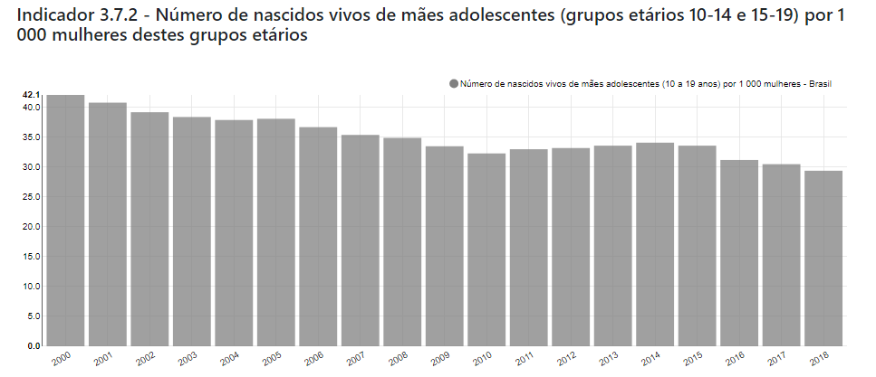

Nações Unidas: Até 2030, assegurar o acesso universal aos serviços de saúde sexual e reprodutiva, incluindo o planejamento familiar, informação e educação, bem como a integração da saúde reprodutiva em estratégias e programas nacionais.
Brasil: Até 2030, assegurar o acesso universal aos serviços e insumos de saúde sexual e reprodutiva, incluindo o planejamento reprodutivo, à informação e educação, bem como a integração da saúde reprodutiva em estratégias e programas nacionais.
Indicadores
3.7.1 - Proporção de mulheres em idade reprodutiva (15 a 49 anos) que utilizam métodos modernos de planejamento familiar
3.7.2 - Número de nascidos vivos de mães adolescentes (grupos etários 10-14 e 15-19) por 1 000 mulheres destes grupos etários
